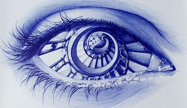

मोतियाबिंद जितना कम पके, मरीज़ उतना जल्दी हो चंगा,
कच्चा कटवाने को नहीं कहते, पर डॉक्टर कहे तो मत हो तंगा।
मोतियाबिंद कोई फल नहीं, जो पूरा पकने का इंतज़ार हो,
ज़्यादा देर करने में डर है ज़्यादा, फटने का खतरा तैयार हो।
मोतियाबिंद का ऑपरेशन होता है बस एक ही बार, सस्ते के लालच में मत करना हज़ार विचार,
अब ज़रूरत के हिसाब से लगती है लेंस, वरना हो सकती है मुश्किल बहुत ज़्यादा।
समझ नहीं आता ये बात मुझे, ऐसा क्यों होता है हर बार?
मोतियाबिंद के ऑपरेशन से महंगा, बनवाया जाता है चश्मा।
आंख के अंदर लगने वाली लेंस, सस्ती चुनी जाती है,
पर लोगों को दिखने वाला चश्मा, महंगे दाम का लिया जाता है।
डॉक्टर की कम फीस भी बहुत महंगी लगती है,
पर थियेटर और शॉपिंग मॉल में हज़ारों उड़ जाते हैं।
मोतियाबिंद के हर मरीज़ को, कुछ सालों बाद आती है झिल्ली,
लेज़र से फिर उसमें, करनी पड़ती है छोटी खिड़की।
मोतियाबिंद का ऑपरेशन कब करवाना चाहिए?
चश्मे के साथ भी दूर की चीज़ अगर लगे धुंधली,
समय आ गया है अब, ऑपरेशन करवा डालो।
रात में देखने में तकलीफ हो और रोशनी फैल जाए,
अब देर मत करो बहुत, मोतियाबिंद न बढ़ जाए।
मोतियाबिंद का ऑपरेशन अब, किसी भी मौसम में हो सकता है,
सर्दी, गर्मी या बारिश, मोतियाबिंद कभी भी उतारा जा सकता है।
रात में लाइट फैले और गाड़ी चलाते समय धुंधला दिखे,
मोतियाबिंद की निशानी है ये, अब देर मत करो, समझ लो।
आज नहीं तो कल करवाना ही है, मोतियाबिंद तो होना तय है,
फिर इंतज़ार क्यों कर रहे हो, दर्द सहने का क्या फायदा?
चश्मे का नंबर हर बार बदलता है, फिर भी धुंधला दिखता है,
अब समझ लो ये इशारा, ऑपरेशन का समय आ गया है।
बेटा-बेटी अपने काम में व्यस्त, और आप इंतज़ार करते हो कब तक?
नज़र अच्छी हो तभी तो, बिना सहारे ज़िंदगी ठीक से चलती है।
एक ही दिन की छोटी प्रक्रिया है, और उसी शाम घर वापस,
डरने की ज़रूरत नहीं अब, विज्ञान बहुत आगे बढ़ चुका है।
मोतियाबिंद पूरा पकने तक इंतज़ार करना, पुरानी बात है अब गलत,
आजकल छोटा मोतियाबिंद भी, ऑपरेशन में ले लिया जाता है।
फूली जितनी देर से कटवाओ,
आंख की पुतली पर निशान उतना ही रह जाए।
फूली दोबारा होने का खतरा कम करना हो तो,
नई त्वचा लगाने वाला ऑपरेशन करवाना चाहिए।
फूली रोज़ थोड़ी-थोड़ी बढ़ती है, इसीलिए तकलीफ देर से समझ आती है,
अगर बार-बार लाल हो जाए, तो ऑपरेशन के बारे में सोच लो,
जितनी देर से कटवाओगे, उतना ज़्यादा निशान पुतली पर रह जाएगा।
छोटी फूली है कहकर, बहुत लंबे समय तक मत टालो,
बड़ी हो जाएगी तो पुतली तक पहुंच जाएगी, फिर पछताना पड़ेगा।
आंख बार-बार लाल रहती है, और जलन भी साथ लाती है,
छोटा सा ऑपरेशन है ये, हमेशा के लिए राहत देता है।
ग्लूकोमा के ज़्यादातर मरीज़ों को, दूर का साफ ही दिखता है,
कोई तकलीफ नहीं मुझे, ऐसा सोचकर बैठे मत रहो।
डायबिटीज़ और बीपी की तरह, ग्लूकोमा भी धीमी बीमारी है,
ये सब आखिरी सांस तक, आपके साथ रहने वाले हैं।
अगर आपको ग्लूकोमा है, तो बूंदें रोज़ डालो,
नज़र जाने का रहेगा खतरा, सहन नहीं होगा वो बोझ।
ग्लूकोमा में बढ़ जाता है, आंख का एक दबाव,
आंख की नस सूख जाती है, कम हो जाती हैं नसें।
ग्लूकोमा को स्वीकार करने में, कोई शर्म मत रखो,
दवा रोज़ लो, बस यही एक नियम निभाओ।
लाल आंखों के होते हैं कई प्रकार, खुद इलाज मत करो कभी भी,
अपने ही पैर पर कुल्हाड़ी मारोगे, इसीलिए कह रहा हूं आपको।
आंखें खुजलाएं और पानी बहे, मौसम बदलते समय अक्सर,
एलर्जी है ये आम बात, डॉक्टर की दवा से ठीक हो जाती है।
ज़्यादा खुजलाओ मत आप, हाथ रखो दूर,
ज़्यादा मलने से बढ़ेगी तकलीफ, नज़र रहेगी अधूरी।
चश्मे के नंबर के होते हैं कई प्रकार,
प्लस, माइनस और तिरछे भी।
माइनस इधर-उधर मिल जाता है,
प्लस और तिरछा ढूंढना पड़ता है।
कभी सब मिल जाते हैं साथ,
और कभी अलग-अलग रहते हैं,
जैसा भी नंबर मिले आपको,
पर चश्मा तो पहनना ही पड़ेगा।
माइनस मतलब दूर का, और नज़दीक का होता है प्लस,
ऐसा हमेशा नहीं होता, ये मत मान लेना।
तेज़ी से बढ़े अगर माइनस नंबर,
ये बात याद रखना,
रफ़्तार रोकने आया है 0.01% एट्रोपीन,
चाहे वो काइट्रो हो, या माय-एट्रो, या फिर मायोपिन।
पुराने चश्मे दराज़ में पड़े हैं, बेकार लगते हैं आपको भले ही,
किसी गरीब की ज़िंदगी में, रोशनी बन सकते हैं वो पल।
दान कर दो पुराने चश्मे, क्लिनिक पर आकर दे जाओ,
एक छोटा सा काम आपका, किसी और की दुनिया रोशन कर देगा।
नंबर हो अगर बहुत ज़्यादा, रेटिना रहता है पतला,
नियमित जांच करवानी पड़ती है, इसमें आलस मत करो।
अगर रहते हो पूरा दिन, कंप्यूटर पर काम करते हुए,
दो-चार बातें सुन लो, मैं कह रहा हूं ऐसे।
स्क्रीन से दो फुट की, रखो आप दूरी,
नीली किरणों को रोको, जाने से आंख के अंदर।
हर घंटे ब्रेक लो, पांच मिनट का,
आंख को आराम दो, कम होगी थकान।
बीच में देखो कोई ऐसी चीज़, जो हो सबसे दूर,
बनाए रखने में मदद करेगा, आपकी आंखों का नूर।
याद रखकर आप सब, पलकें झपकाते रहो,
हर दो घंटे में, एक गिलास पानी पियो।
खाने में बढ़ा दो, अलसी, अखरोट, बादाम,
लंबे समय तक आपको, आंखें देंगी साथ।
मोबाइल-टीवी में बच्चा रहता है, घंटों तक डूबा हुआ,
नंबर बढ़ने का खतरा बढ़ता है, रखो थोड़ी नज़र चुपचाप।
रोज़ थोड़ा समय बाहर खिलाओ, धूप में ले जाओ,
आंखों की सेहत के लिए, प्रकृति से बेहतर कोई उपाय नहीं।
डॉक्टर की फीस औसतन, सिनेमा के टिकट से सस्ती,
फिर भी कइयों को लगे ज़्यादा, ऐसी है अपनी बस्ती।
एक करता है आपको खुश, दूसरा दूर करता है दुख,
फीस उसकी रोज़ी-रोटी है, मत छीनो उसका ये सुख।
अच्छा लगे इसलिए बूंदें, खुद से बंद मत करना कभी भी,
डॉक्टर ने जितने दिन कहा हो, उतने दिन जारी रखना।
आंख लाल हो और चिपचिपाहट जमे, दवा खुद से मत लेना,
डॉक्टर को दिखाए बिना, घरेलू नुस्खे मत आज़माना।
बूंदें डालो सही तरीके से, उंगली मत लगाओ पुतली को,
डॉक्टर ने जैसा कहा वैसे डालो, कोई दिन मत छोड़ना।
बूंद की बोतल खोलने के बाद, एक महीना ही चलती है,
पुरानी बोतल इस्तेमाल करना टालो, भले आधी भरी हो।
फ्रिज में रखने वाली बूंदें हों तो, बाहर ज़्यादा देर मत रखना,
डॉक्टर के बताए अनुसार संभालो, कोई लापरवाही मत करना।
ऑपरेशन का खर्च सुनकर, पीछे मत हटना कभी भी,
बीमा या किश्तें उपलब्ध हैं, पूछ लेना हमसे।
एक डॉक्टर की बात पसंद न आए, तो दूसरे से जाकर पूछ लेना,
पर फैसला लेने में देर करके, नज़र मत गंवा बैठना।
डायबिटीज़ पुरानी हो अगर, आंख की जांच करवाओ,
रेटिना को नुकसान होता है, समय रहते संभल जाओ।
नज़र अच्छी हो फिर भी, जांच मत छोड़ना कभी भी,
डायबिटीज़ में आंख का नुकसान, चुपचाप पैर पसारता है।
आंखें जलें और किरकिरी लगे, पानी होते हुए भी सूखी रहे,
बूंदें नियमित डालोगे तो, तकलीफ धीरे-धीरे मिट जाएगी।
छोटे बच्चे की आंख जंचवाओ, पढ़ाई शुरू होने से पहले,
आलस करके अगर छोड़ दिया, चश्मा देर से पता चलेगा।
बच्चे की आंख तिरछी लगे, हंसी में मत उड़ाओ,
छोटी उम्र में इलाज हो जाए, वरना सवाल हमेशा रह जाएगा।
एक आंख से कम दिखे, और दूसरी करे सारा काम,
छोटी उम्र में इलाज न हो तो, ये कमी हमेशा रह जाती है।
छह साल से पहले की जांच है, सबसे ज़्यादा असरदार,
जितनी देर करोगे, इलाज उतना मुश्किल हो जाएगा।
लाल और हरा रंग उलझन में डाले, ऐसा बच्चे को लगे कभी,
जांच करवा लो एक बार, स्कूल जाने से पहले।
महीना पहले जन्मा बच्चा हो, वज़न अगर हो कम,
आंख की खास जांच करवाओ, टालना मत इस मुद्दे को।
रेटिना का विकास अधूरा रह जाता है, छोटा खतरा है इसमें,
जल्दी जांच और इलाज से, नज़र बच जाती है समय पर।
बच्चे की आंख में फोटो खींचो और, सफेद चमक दिखे,
छोटी बात मत समझना इसे, जांच करवानी ज़रूरी है।
जल्दी जांच से बचती है नज़र, और बचती है ज़िंदगी भी,
आलस बहुत भारी पड़ता है, समझ लो ये बात।
तिरछी आंख का ऑपरेशन, उम्र देखकर करवाया जाता है,
छोटे बच्चे में जल्दी करो, नज़र सीधी हो जाएगी।
बड़ी उम्र में भी होता है, तिरछापन सीधा,
शर्माने की बात नहीं है, करवा लो बेझिझक थोड़ा।
एक ही ऑपरेशन में ठीक हो जाए, ये ज़रूरी नहीं हमेशा,
डॉक्टर कहे जितनी बार करवाओ, रखो धैर्य और विश्वास।
धूप में जाओ तो चश्मा पहनो, इसमें आलस मत करना,
यूवी किरणें रोकने वाला हो, रखे आंख को शक्तिशाली प्लस।
चालीस के बाद हर साल, आंख की जांच करवाओ,
छोटी बीमारी बड़ी बने उससे पहले, जल्दी संभल जाओ।
चश्मे से थक गए हो अगर, और आंखें हों ठीक-ठाक,
लेसिक से मिल सकता है छुटकारा, नंबर का बोझ नहीं रहेगा।
चश्मे के बिना फोटो खिंचवाने का, सपना है कइयों का पुराना,
लेसिक से मुमकिन है ये, बस फैसला लेना है छोटा।
नौकरी में, खेल में, या शादी में, चश्मा बार-बार आड़े आता है,
एक ही बार फैसला लेकर, जियो चश्मे के बिना ज़िंदगी फिर से।
जांच करवाओ पूरी तरह से, जानो कि लेसिक के लायक हो या नहीं,
बिना जाने ना मत कहना, फैसला करो जानकर सही तरीके से।
कॉन्टेक्ट लेंस पहनो तो, सफाई का रखो ध्यान,
रात को सोते समय मत रखना, वरना बढ़ेगा नुकसान।
चश्मा संभालना आसान है, कॉन्टेक्ट देता है खुली नज़र,
दोनों के फायदे अलग-अलग हैं, समझकर चुनाव करो।
खेल-कूद या समारोह में, कॉन्टेक्ट देता है बहुत राहत,
पर सफाई न रखो तो, बढ़ती है तकलीफ बहुत ज़्यादा।
लेंस पहनो और आंख खुजलाए, लालिमा के साथ आए पानी,
एलर्जी है लेंस के केमिकल की, नज़रअंदाज़ मत करना इसे,
सॉल्यूशन बदलकर देखो, या लेंस का प्रकार बदलो,
फिर भी तकलीफ ठीक न हो तो, डॉक्टर से तुरंत मिलो।
आंख में कुछ गिर जाए तो, खुद से मत मलना कभी भी,
डॉक्टर के पास ले जाओ तुरंत, वरना बढ़ेगा नुकसान।
आंख में केमिकल पड़ जाए तो, पंद्रह मिनट पानी से धोओ,
डॉक्टर के पास पहुंचो फिर, समय बिल्कुल मत गंवाना।
आंख में चोट लगे और दर्द के साथ लालिमा आए,
खुद से मरहम लगाने की गलती, कभी मत करना।
कॉर्निया में घाव हो जाए तो, नज़र जाने का खतरा बहुत,
डॉक्टर के पास तुरंत जाओ, बिल्कुल भी देर मत करना।
पटाखे जलाओ तो चश्मा पहनो, और रखो हाथ दूर,
एक पल की लापरवाही, बन सकती है ज़िंदगी भर का दाग।
आंख में चिंगारी पड़ जाए तो खुद से, पानी से धो लो तुरंत,
मरहम या घरेलू उपाय करने से पहले, डॉक्टर के पास जल्दी जाओ।
रंग खेलो पर ध्यान रखो, आंख में रंग न जाए,
केमिकल वाले रंगों से, कॉर्निया को नुकसान होता है।
वेल्डिंग करो तो गॉगल्स पहनो, लापरवाही मत बरतना,
आंख की किरणों का नुकसान, देर से दिखता है, समझ लो।
खेत में काम करो जब, धूल-मिट्टी से बचाव रखो,
चश्मा पहनकर काम करो तो, आंखों को मिलेगी राहत।
बरसात में आंख का संक्रमण बढ़ता है, गंदे पानी से सावधान रहो,
आंख लाल हो या चिपचिपाहट जमे, डॉक्टर को तुरंत दिखाओ।
पूल में तैरने जाओ तो, गॉगल्स पहनना मत भूलना,
क्लोरीन वाला पानी आंख में जाए तो, जलन बहुत होती है।
बाहर निकलो सड़क पर, धूल-धुआं हो बहुत,
चश्मा पहनकर निकलो तो, आंख को मिलेगी अच्छी सुरक्षा।
क्रिकेट, बैडमिंटन खेलो तब, गेंद लगने का खतरा रहता है,
छोटे बच्चों को खासकर समझाओ, सुरक्षा का महत्व बताकर।
मरने के बाद भी आंखें आपकी, किसी की दुनिया रोशन करें,
नेत्रदान कर जाओ, पुण्य का काम है ये सचमुच।
कॉर्निया धुंधली हो जाए अगर, और नज़र न रहे साबुत,
प्रत्यारोपण से मिलता है नया जीवन, विज्ञान का है ये अद्भुत तोहफा।
दान में मिली आंख से, किसी की दुनिया फिर से जगमगाए,
एक ही आंख का दान करके, दो लोगों की ज़िंदगी बदल जाती है।
आसमान में देखने पर दिखें, काले धब्बे या धागे जैसे,
बड़ी उम्र में आम बात है ये, घबराने की ज़रूरत नहीं ज़्यादा।
पर अचानक बढ़ जाए संख्या, या साथ में आए चमक,
जांच करवा लेना तुरंत, ज़्यादा मत सोचना।
अचानक दिखे बिजली जैसा, या पर्दा आ जाए आड़ा,
रेटिना खिसकने की निशानी है ये, समय मत गंवाना।
रेटिना का ऑपरेशन है, जितनी जल्दी उतना अच्छा,
देर करोगे जितनी, उतना नज़र का खतरा बढ़ेगा।
मक्खी उड़ती दिखे या चमक बार-बार आए,
छोटी बात समझकर मत टालना, जांच करवाओ सही समय पर।
पुराने धब्बे आसमान में घूमते हैं, ये है आम बात,
पर नए धब्बे अचानक बढ़ें, साथ में आए बिजली जैसी चमक।
ये फर्क समझना ज़रूरी है, दोनों को एक मत समझना,
शक हो तो इंतज़ार मत करना, तुरंत डॉक्टर से मिलना।
चालीस साल में नज़दीक का धुंधला दिखे, ये कोई बीमारी नहीं है,
प्राकृतिक है ये बदलाव, इसमें डरने जैसी कोई बात नहीं।
अखबार दूर रखकर पढ़ो, या नंबर लगे छोटा,
अब ज़रूरत है चश्मे की, बहाना मत बनाओ।
प्रोग्रेसिव या बाइफोकल, दोनों में है सुविधा,
डॉक्टर की सलाह लेकर चुनो, ज़िद मत रखना।
काजल-मस्कारा लगाओ भले ही, पर रात को साफ कर लेना,
आंख के किनारे पर रह जाए मेकअप तो, संक्रमण का खतरा होता है।
पुराना काजल फेंक देना, साल पूरा होने पर,
आंख की देखभाल करनी हो तो, छोटी सावधानी ही बहुत है।
आंख की एक्सरसाइज़ करने से, नंबर चला जाता है ऐसा कहा जाता है,
पर सच्ची बात ये है कि, नंबर एक्सरसाइज़ से नहीं मिटता।
गाजर खाने से नंबर जाता है, ये बात है अधूरी,
अच्छा खाना रखे स्वस्थ, पर नंबर की दवा है अलग।
सीधी लाइन टेढ़ी दिखे, या बीच में पड़े धब्बा,
उम्र के साथ होने वाली ये तकलीफ, जल्दी जांच से रहती है काबू में।
नंबर तेज़ी से बढ़ता रहे और, चश्मे से भी साफ न दिखे,
केराटोकोनस हो सकता है ये, जांच करवानी ज़रूरी है।
आंख मलने की आदत छोड़ो, खासकर रात को,
केराटोकोनस बढ़ने का कारण, यही आदत बनती है अक्सर।
घर में गिरने का कारण, आधा है कमज़ोर नज़र,
मोतियाबिंद निकलवा लो समय पर, टालो गिरने का डर।
उम्र हो गई इसलिए मत करवाना, ऐसी गलती मत करना,
अस्सी साल में भी होता है ऑपरेशन, हिम्मत रखकर आगे बढ़ो।
शाम होते ही धुंधला दिखे, अंधेरे में न सूझे रास्ता,
विटामिन ए की कमी हो सकती है, जांच करवाओ, परेशान मत रहो।
हरी सब्ज़ियां और गाजर खाओ, आंख को मिलेगा भरपूर पोषण,
छोटी सी ये सावधानी रखो तो, नज़र हमेशा रहेगी तेज़।
आंख फड़के तो शुभ-अशुभ, सोचना छोड़ दो,
थकान या नींद कम होने का कारण है ये, आराम कर लो।
लंबे समय तक फड़कती रहे, तो डॉक्टर को दिखा देना,
छोटी तकलीफ भी कभी-कभी, बड़ी बात का इशारा करती है।
आंख में अचानक लाल धब्बा दिखे, घबराने की ज़रूरत नहीं कोई,
खांसी-छींक या बीपी के कारण, छोटी नस फट जाती है।
अपने आप ठीक हो जाता है ये, दो हफ्तों में धीरे-धीरे,
फिर भी एक बार दिखा देना, बीपी भी चेक करवा लेना।
आंखें बाहर आती हुई लगें, या पलकें पूरी बंद न हों,
थायरॉइड का असर हो सकता है आंख पर, जांच करवाना ज़रूरी है।
पलकों के किनारे पर पपड़ी जमे, और सुबह आंख चिपके,
गर्म पानी की सिकाई से राहत मिलती है, साफ करो रोज़ धीरे से।
सिर दर्द होने से पहले, चमक या लकीरें दिखें,
माइग्रेन की ये निशानी है, डरने की ज़रूरत नहीं।
पर पहली बार हो तो दिखा देना, पक्का करने के लिए,
आंख की कोई और तकलीफ तो नहीं, ये जानना ज़रूरी है।
धूप या तेज़ रोशनी में आंख, बंद करने का मन करे,
छोटी तकलीफ समझकर मत टालना, वजह कई हो सकती हैं।
गर्भावस्था में आंख का बीपी भी, जंचवाना है ज़रूरी,
डायबिटीज़ या बीपी हो तो, रेटिना की जांच मत टालना।
नंबर बदल जाता है थोड़ा-बहुत, गर्भावस्था के दौरान ये आम है,
डिलीवरी के बाद स्थिर हो जाए, तब करवाना चश्मे में बदलाव।
पलक पर सूजन आ जाए, और दर्द भी साथ लाए,
गुहेरी है ये आम संक्रमण, घबराने की कोई बात नहीं।
खुद से फोड़ने की कोशिश, गलती से भी मत करना,
डॉक्टर की दवा से ठीक होती है, थोड़ा धैर्य रखना।
ऑपरेशन के बाद आंख को, धूल-मिट्टी से रखो दूर,
पानी अंदर मत जाने देना, नहाते समय रहना सावधान।
डॉक्टर की दी हुई बूंदों की सूची, ठीक से फॉलो करो रोज़,
चेकअप के लिए आना मत भूलना, यही है सबसे बड़ा फर्ज़।
मोतियाबिंद के ऑपरेशन के बाद, कभी-कभी बढ़ जाता है आंख का दबाव,
नियमित चेकअप में इस पर भी, डॉक्टर रखते हैं नज़र।
ऑपरेशन का नाम सुनकर, डर क्यों जाते हो इतना?
दस-पंद्रह मिनट की प्रक्रिया है ये, दर्द या घाव नहीं रहता।
पुरानी बातें सुनकर डरना मत, ज़माना बदल चुका है बहुत,
टेक्नोलॉजी इतनी आगे है अब, डरने की कोई वजह नहीं।
पड़ोसी ने करवाया और ठीक हो गया, आप क्यों कर रहे हो इंतज़ार?
हज़ारों मरीज़ करवा चुके हैं, आप अकेले क्यों उलझन में हो?
आज का काम कल पर मत टालो, आंख के मामले में खासकर,
देर करने से बढ़ती है तकलीफ, और घटती है सफलता की उम्मीद।
माता-पिता की आंखों का ध्यान, बेटे की है पहली ज़िम्मेदारी,
छोटा निवेश है ऑपरेशन में, बड़ा है उसका फायदा।
अपने मम्मी-पापा से पूछो, आखिरी बार कब करवाया चेकअप,
आलस में मत रहने देना, नज़र है अनमोल गहना।
घर और गाड़ी पर खर्च, बिना सोचे कर देते हो,
आंखों पर खर्च करते समय क्यों, इतना ज़्यादा सोचते हो?
मुफ्त जांच करवाने के लालच में, अपनी आंख दांव पर मत लगाना,
जिस डॉक्टर के पास समय ही न हो, वो क्या जांच करेगा ठीक से?
पांच मिनट में निपटा देते हैं जांच, और मोतियाबिंद दिखाकर डराते हैं,
पैसे वसूलने का धंधा है ये, सच्ची जांच कहां होती है इसमें?
आंख की पूरी जांच में, दबाव और रेटिना भी देखा जाता है,
मुफ्त के कैंप में इतना समय, किसी के पास कहां होता है?
सिर्फ नंबर चेक करके चश्मा पकड़ा देना, पूरी जांच नहीं कहलाती,
आंख के पर्दे तक की जांच के बिना, बीमारी छुपी रह जाती है।
फीस भरने का डर रखकर, जांच टालना है बड़ी गलती,
सस्ता ढूंढने जाने पर कभी-कभी, गंवानी पड़ती है नज़र की कीमत।
डॉक्टर की फीस उसकी मेहनत का मूल्य है,
उसे चुकाने में कंजूसी मत करना, याद रखना ये बात।
मुफ्त जांच के बहाने, फिर ऑपरेशन करवाने का दबाव डाला जाता है,
जल्दी फैसला लेने पर मजबूर करने के लिए, डरा-धमकाकर बात की जाती है।
अपनी मर्ज़ी और समय के हिसाब से, फैसला लेने का हक है आपका,
किसी के दबाव में आकर, जल्दबाज़ी मत करना।
मुफ्त में सिर्फ एक जगह जांच करवाकर, फैसला मत ले लेना,
अपने नियमित डॉक्टर को दिखाकर, तसल्ली कर लेना।
सस्ता और मुफ्त हमेशा अच्छा हो, ये ज़रूरी नहीं है,
आंखों के मामले में गुणवत्ता से, समझौता नहीं करना चाहिए।
जिस चीज़ की कीमत चुकाते हो, उसकी ज़िम्मेदारी भी होती है,
मुफ्त में मिली सलाह के पीछे, ज़िम्मेदारी कहां होती है?
गांव-गांव में कैंप लगते हैं, और जल्दबाज़ी में ऑपरेशन करवा लिया जाता है,
नतीजा अच्छा न आए तो, ज़िम्मेदार कौन, किससे पूछोगे तब?
पास के अच्छे डॉक्टर के पास जाकर, नियमित जांच करवाओ भले थोड़ा दूर हो,
एक बार की गलती भारी पड़ती है, नज़र है अनमोल, याद रखना ये बात।
मुफ्त के मोह में पड़कर, अपनी आंखें दांव पर मत रखना,
सही डॉक्टर, सही जांच, सही फीस — यही है सही रास्ता।
ये सभी कहावतें मेरे द्वारा रची गई हैं और ये सिर्फ और सिर्फ आंख और उसकी बीमारियों के प्रति जागरूकता के लिए हैं। कृपया इनका उपयोग अपनी बीमारी के निदान या इलाज के लिए खुद से न करें। आंख से जुड़ी किसी भी तकलीफ के लिए आंख के विशेषज्ञ डॉक्टर से संपर्क करें। - डॉ. धवल पटेल (MD, AIIMS Delhi)
Where healthy eyes and confident smiles come together.
Our doctors are qualified from Prestigious AIIMS New Delhi. They are best and experts in their respective fields.
Our doctors have more than 10 years of experience in their respective fields.
Our humble and polite staff is always ready to serve you the best.
Dr Dhaval Patel has conducted many eye camps in Africa and visits yearly for the same.